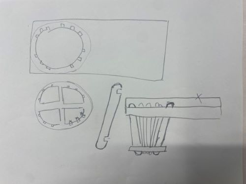
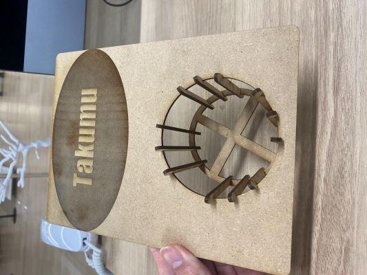

【作品タイトル 映画館にあるあれ】
今回私は映画館で使われるドリンクやポップコーンを置くトレーを作ろうと決めた。
【構想図】

【完成作品と説明】

・自分は映画が好きなため、家で映画を見る際にこれがあれば、映画館の雰囲気を味わえるなと思いイラストレーターで作った。
・当初はボンドでくっつけようと思ったが、甘えるてるなと思いこのようなデザインにした。
・円の直径は８センチ、棒の長さは７センチとすることでペットボトルを安定的に置けるようにした。
・棒と板に2.5mmの切り込みを入れることで、上と下をつなげることに成功し立体感のあるものとなった。
・コップの隣の名前のところにはお菓子やスマホを置く予定。
使い方
こちらから使い方のイメージ
【設計ファイル】
今回の作品のALファイル
【感想】
今回の作品はファブラボにいる先生や先輩方の協力のもとに作ることができた作品であった。
当初はトレーの下のコップを置く部分を円にするつもりであったが、アドバイスをもとに十字型にすることで強度を保ちつつ
デザイン性のあるものにすることができた。また、イラストレーターの使い方も教えてくれた。
良い作品を作ることができた。今度の金曜ロードショーのスパイダーマンはこれを使ってみようと思う。